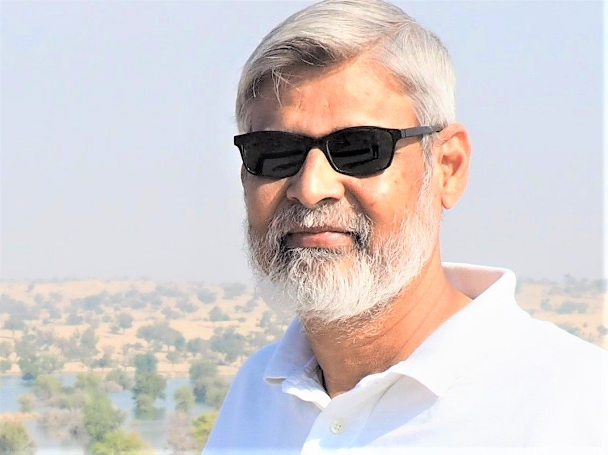

Environmental & Biodiversity Assessments
Ecological baseline studies, biodiversity assessments and mitigation recommendations.
Rafiul Haq
Independent Environmental Consultant · Ecologist · Biodiversity & Sustainability Advisor
Environmental consulting and ecological expertise to support biodiversity conservation, ecosystem restoration, climate resilience and sustainable development.

About
Rafiul Haq’s career began in 1988 with field research on salt-tolerant plants along Pakistan’s coast. Since then he has worked across research, conservation programme management and environmental advisory — at the University of Karachi, the University of Reading, IUCN Pakistan and WWF-Pakistan — and, since 2012, as an independent consultant.
He was a member of the core team that developed Pakistan’s National Wetlands Policy, served as National Coordinator of IUCN’s Mangroves for the Future programme in Pakistan, and has led the biodiversity components of environmental assessments for World Bank, Asian Development Bank and private-sector projects in energy, ports, water resources and transport.
His recent work centres on the Indus Delta and coastal Sindh: cluster-based mangrove conservation plans, local adaptation plans for agriculture and fisheries, and technical input to blue and green carbon projects. He is a founder member of CRAB (Conservation Restoration Alliance for Biodiversity) Green Solutions.
Expertise
Eight connected disciplines, each grounded in documented assignments rather than abstract capability.
Ecological baselines and vulnerability assessments that establish what is at stake on a site before decisions are made.
Biodiversity leadership on EIA, ESIA and ESMF studies, from sensitivity mapping to practical mitigation measures.
Restoration and conservation planning for the Indus Delta and coastal Sindh, including mangrove survival and growth monitoring.
Whole-system thinking about how water, vegetation, livelihoods and land use interact over time.
Local Adaptation Plans of Action (LAPA) that embed ecosystems in agriculture and fisheries planning.
Technical input to blue and green carbon feasibility, validation and due diligence.
Field-based evidence to support biodiversity and ecosystem safeguards aligned with IFC and EBRD expectations.
Policy development and institutional advisory, from national wetlands policy to provincial technical committees.
Consulting services
Engagements range from a focused biodiversity review to leading a technical workstream within a larger consultancy team. Each service below draws directly on the assignments described in the projects section.
Discuss a ProjectEcological baseline studies, biodiversity assessments and mitigation recommendations.
Environmental assessment support and biodiversity-focused technical reviews for infrastructure, energy and development projects.
Restoration planning, coastal ecosystem management and community-oriented conservation approaches.
Ecosystem resilience, climate adaptation planning and nature-based environmental strategies.
Technical input into carbon project feasibility, ecosystem carbon initiatives and biodiversity considerations.
Environmental safeguards, sustainability integration and practical management recommendations.
Technical contributions to environmental policy, natural resource management and institutional planning.
Technical lectures, workshops, capacity building and stakeholder facilitation.
Selected work
Roles are stated as they appear in the record — including where the contribution was as part of a wider team.
Featured · Wetlands & Policy
The draft policy recognises the value of Pakistan’s wetlands for water regulation, climate, biodiversity, human health and livelihoods, responding to the Ramsar Convention’s call for national policies built on the “wise use” of wetlands. As a core team member, Rafiul Haq coordinated with multiple stakeholders and led the policy dialogue at sub-national and national levels.
Climate · Carbon
Facilitated the programme in achieving validation status from a Verra-accredited agency — establishing eligibility for carbon credits from the mangrove forests of the Indus Delta.
As Country Director, facilitated the programme in achieving validation status from a Verra-accredited agency, the step that establishes eligibility for carbon credits from Indus Delta mangroves.
Subsequently contributed the technical aspects of due diligence on DBC-1 on behalf of a buyer of the carbon credits.
Climate · Carbon
Pre-feasibility analysis of a riverine forestry climate-change project, evaluating the business viability of carbon project propositions made by Sindh Forest Department and providing recommendations.
Wetlands · Climate adaptation
Cluster-based mangrove conservation plans of action for 17 villages, reflecting local needs and the specifics of climate change.
The Local Adaptation Plans of Action set out climate-specific adaptation measures for agriculture and fisheries in the two coastal talukas, embedding wetlands in adaptation planning.
The cluster-based mangrove conservation plans followed, covering 17 villages and tailored to the specific needs of Ketibundar and Kharochaan under a changing climate.
Restoration · Corporate partnership
Establishment of a 25-acre mangrove plantation as a CSR initiative, implemented under CRAB in collaboration with the Coastal Forestry Division of Sindh Forest Department.
Environmental assessment · Infrastructure
Biodiversity lead or reviewer on ESIA, EIA and ESMF studies for economic corridors, dams, irrigation, river-basin management and urban transit.
Environmental assessment · Energy
Assessing biodiversity sensitivities and risks for oil and gas exploration, thermal and wind power, LNG and coal handling — and recommending mitigation measures shared with stakeholders.
Coastal communities
A multi-sector project to reduce poverty in coastal Thatta and Badin by diversifying livelihoods and stabilising environmental degradation. Also supported its proposal development, negotiation and inception at IUCN.
Biodiversity · Research
Mainstreaming biodiversity into the production system of Ziarat valley, globally important as the second-largest remaining stand of juniper forest.
Climate finance · Knowledge
An accessible guidebook helping journalists monitor budgetary allocations for climate change.
Career highlights
Career begins with NSRDB-funded field research on halophytes along Pakistan’s coastal deserts.
Core team member, Pakistan’s National Wetlands Policy, leading policy dialogue at national and sub-national levels.
National Coordinating Body meetings convened for Mangroves for the Future, with 85–90% member attendance.
Villages covered by cluster-based mangrove conservation plans in Ketibundar and Kharochaan.
Experience
A concise view of the career. The full CV carries detailed responsibilities, training and conference history.
Download full CV (PDF)Freelance · Founder Member, CRAB Green Solutions
Consultant and advisor to Sindh Forest Department, SGS, GEF-UNDP Small Grants Programme, The World Bank, ADB, LEAD Pakistan, IUCN, WWF-Pakistan, SECMC, Sindh EPA and KMC Parks & Horticulture, among others.
IUCN Pakistan
Led the national programme; developed the National Strategy and Action Plan and Small Grants Facility guidelines; managed grants and regional liaison.
IUCN Pakistan
NRM technical input nationwide; National Wetlands Policy core team; country focal point for the IUCN Species Survival Commission.
Yaqeen Education Foundation · Aga Khan Education Services & Aga Khan Higher Secondary School · Army Public College, Malir Cantt.
Head of Science; Head of Botany Department; Head of Biology Department.
Environmental Assessment Services, IUCN Pakistan
WWF-Pakistan
Planning and Coordination Department, Pakistan State Oil
Coastal Ecosystem Unit, IUCN Pakistan
Plant Science Laboratories, University of Reading, UK
Department of Botany, University of Karachi
Publications & research
CPNE for UNDP. A guide for journalists tracking climate-change budget allocations.
IUCN / GEF-UNDP report.
IUCN Sindh Programme project report.
NORAD-IUCN joint project report.
NORAD-IUCN joint project report.
The News International, 8 December 1995.
UNDP-IUCN joint project report.
Contributed country-level information during the development phase.
Haq, R. & Khan, M.A. Proceedings of the National Conference on Problems and Resources of Makran Coast, Pakistan Council for Science and Technology, pp. 150–157.
Contact
Let’s discuss how ecological expertise, biodiversity assessment and practical environmental planning can support your next project.